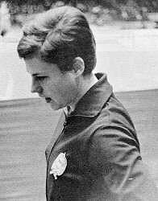

Katalin Makray (HUN)
1963 University Games AA Champion
1964 Olympic UB Silver Medalist

Katalin was born on April 15, 1945.
Competition Results
1960
Avangard Kharkov-BP Postas Dual Meet: 2nd Team, 4th AA
Jr. CSSR-HUN Dual Meet: 2nd Team, 1st AA, 1st UB, 4th FX
Junior Selection Meet: 1st AA, 1st B, 2nd UB, 3rd FX
1961
CSSR "B"-HUN "B" Dual Meet: 2nd Team, 2nd AA, 1st UB, 2nd V, 2nd B
Hungarian Masters Championships: 3rd AA, 1st UB, 3rd FX, 4th V, 4th B
1962
Hungarian Youth Championships: 3rd AA, 1st UB, 2nd V, 3rd B
World Championships: 27th AA, 6th UB
1963
Hungarian Masters Championships: 1st AA, 1st UB, 1st FX, 2nd B, 4th V
International Competition at National Sports Days: 3rd AA, 1st UB, 1st FX, 3rd B
University Games: 1st Team, 1st AA
1964
Hungarian Masters Championships: 2nd AA, 1st UB, 2nd B, 2nd FX
Olympic Games: 5th Team, 18th AA, 2nd UB
POL-GDR-HUN: 3rd Team, 6th AA
1965
Hungarian Masters Championships: 2nd AA
University Games: 3rd AA, 2nd UB, 3rd B
1966
Hungarian Masters Championships: 6th AA, 2nd UB, 6th V
Warsaw International: 9th AA
Yerevan Invitational: 4th AA
1968
Hungarian Masters Championships: 5th AA, 1st UB, 4th B
HUN-AUT Dual Meet: 1st Team, 1st AA
HUN-USSR Dual Meet: 2nd Team, 6th AA
Olympic Games: 5th Team, 26th AA
This page was created on November
20, 2005 and was last updated on February 07, 2021.
© Gymn Forum